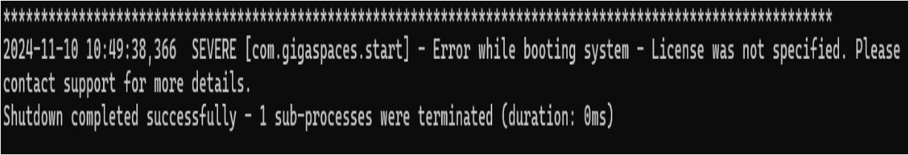
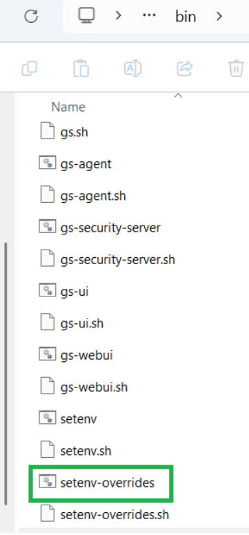
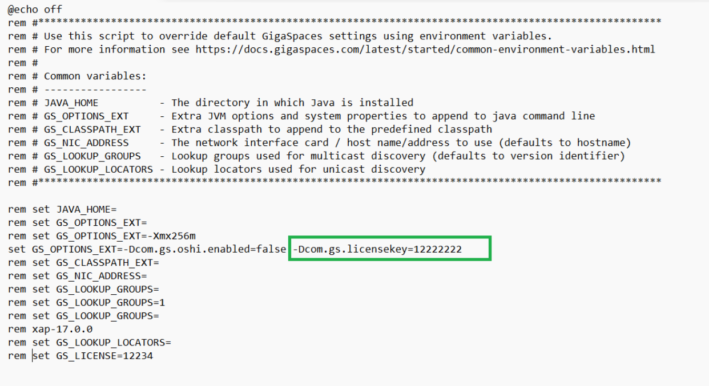
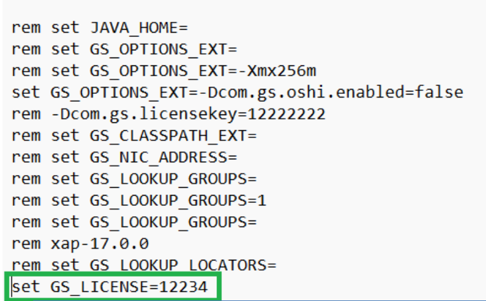

The license is validated whenever the service grid is started. If the license is invalid for some reason (for example, if it is expired), the system will report a problem with the license and terminate. If the license expires while the system is up and running, it will continue to run. However, if a system components fails and tries to restart, it will fail because the license is not valid. Example:

If you're using Docker images for evaluation, add the -e GS_LICENSE=... option to the Docker run command, using the license key you got.
For any of the methods selected, make sure to save the file and restart the XAP services.
The system looks for the license key in the following 5 locations, in the following order:
The 5 options below are in sequential order. That is, option 1 will override option 2. Option 2 will override option 3. And so on.
| Option | Description | Example |
|---|---|---|
| 1 | The com.gs.licensekey system property. |
 set GS_OPTIONS_EXT=-Dcom.gs.licensekey=12345:
 |
| 2 | The |
 Following are the ways to verify if the license in the system properties is valid:
|
| 3 | A xap-license.txtgs-license.txt |
|
| 4 | A xap-license.txtgs-license.txtcom.gs.home system property). |
This is the simplest option:
|
| 5 | A xap-license.txtgs-license.txt |